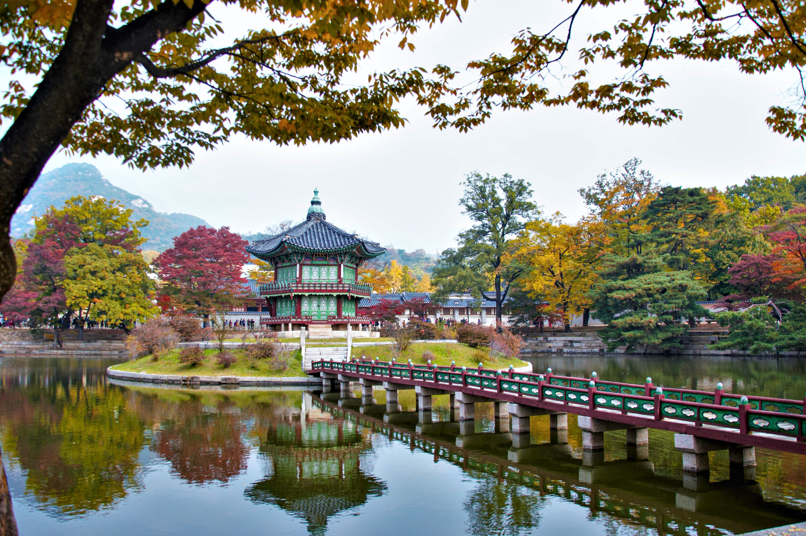
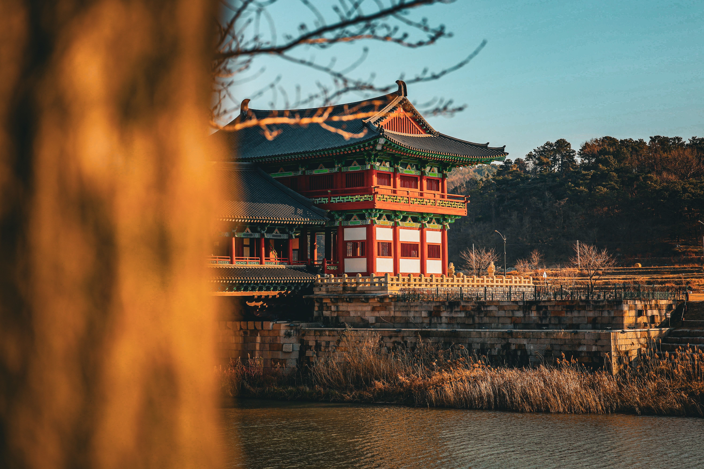
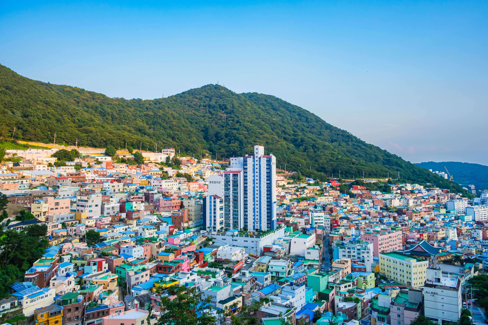
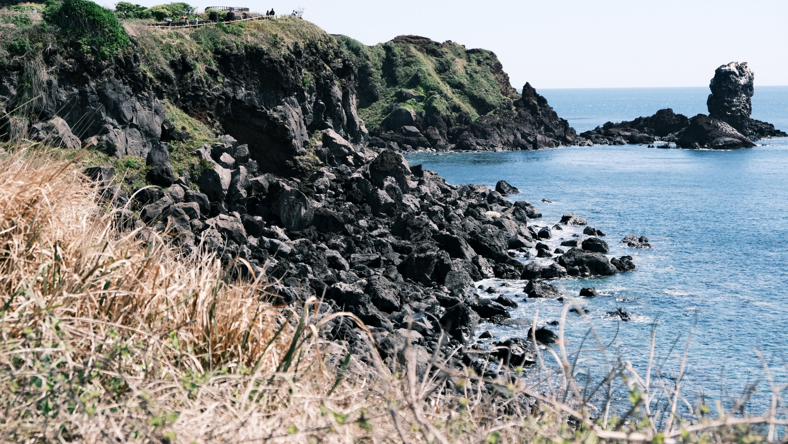

Commencez votre circuit dans la capitale sud-coréenne, une ville où les palais historiques côtoient les gratte-ciel modernes. Découvrez le palais Gyeongbokgung et ses cours majestueuses, puis promenez-vous dans le village traditionnel de Bukchon Hanok. Terminez la journée dans le quartier animé de Myeongdong, réputé pour ses boutiques et sa street food.

Partez à la découverte de Gyeongju, ancienne capitale du royaume de Silla et véritable musée à ciel ouvert. Explorez le temple Bulguksa, admirez les tumulus royaux du parc Daereungwon et découvrez les trésors historiques qui témoignent de la richesse du patrimoine coréen. Cette étape vous plonge dans plusieurs siècles d'histoire et de traditions.

Rejoignez Busan, la grande ville portuaire du sud du pays. Promenez-vous dans le village culturel de Gamcheon, célèbre pour ses maisons colorées et ses œuvres artistiques. Découvrez ensuite le marché traditionnel de Jagalchi et profitez de l'ambiance maritime de cette ville dynamique, où la culture urbaine rencontre les paysages côtiers.

Découvrez l'île de Jeju, célèbre pour ses paysages volcaniques, ses falaises spectaculaires et sa nature préservée. Admirez les panoramas de la côte et explorez les paysages façonnés par l'activité volcanique. Cette dernière étape vous offre une parenthèse naturelle et dépaysante, loin de l'agitation des grandes villes sud-coréennes.
| Option de Séjour | Hébergement (Hôtels 4★) | Inclus | Prix / Pers. |
|---|---|---|---|
| Pack Évasion | Hôtels 4★ (Charme & Confort) | Vols + Transferts + Petit-déjeuner | 14 900 MAD |
| Pack Signature | Hôtels 4★ Sup (Centre-ville & Vue Mer) | Demi-pension + Guides + Excursions | 19 900 MAD |
| Pack Excellence | Hôtels 5★ (Suites Premium) | Pension Complète + Chauffeur Privé + Conciergerie VIP 24/7 | 28 900 MAD |